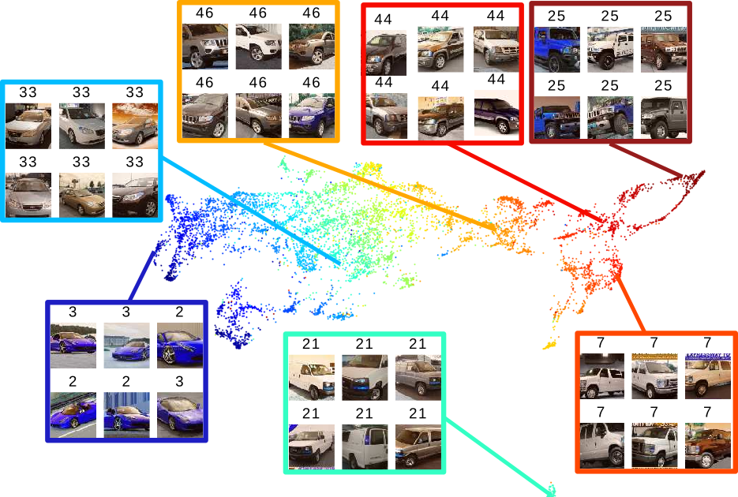
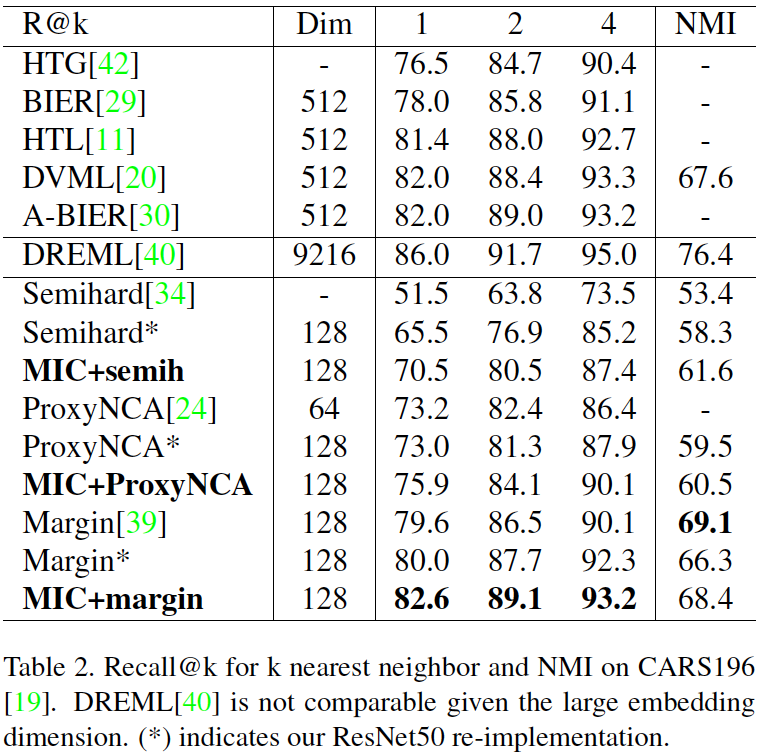
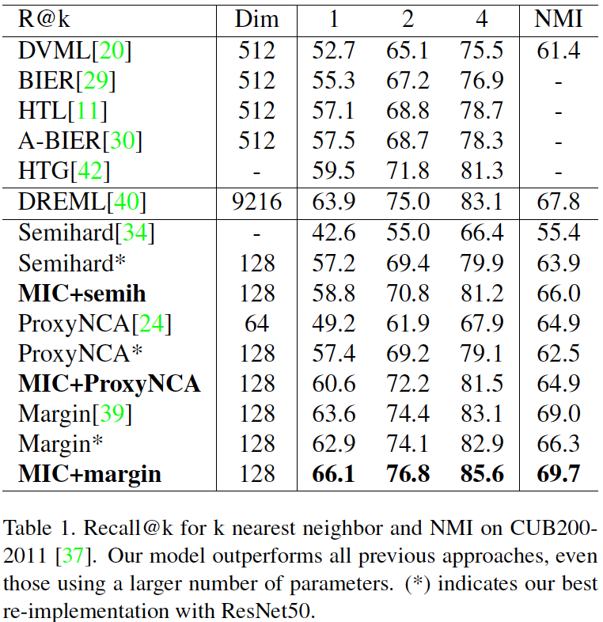
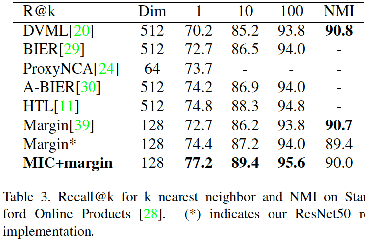
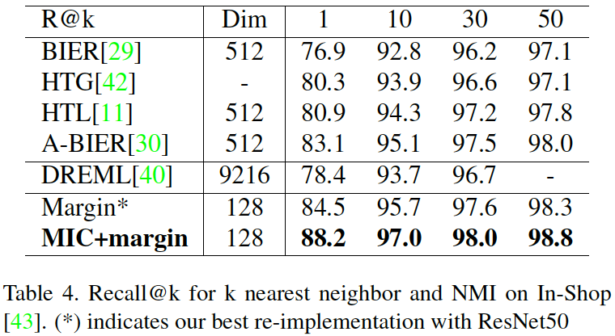
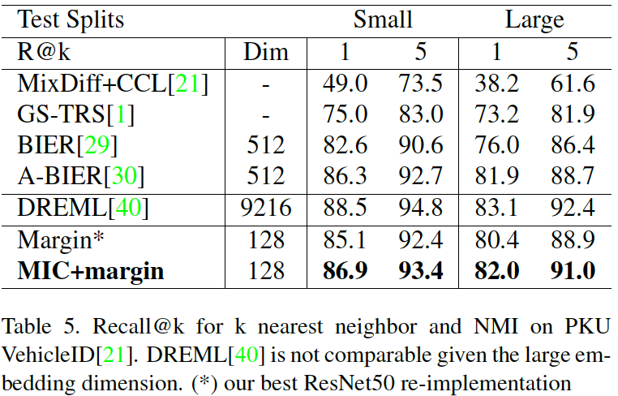

MIC: Mining Interclass Characteristics for Improved Metric Learning
Karsten Roth* Biagio Brattoli* Björn Ommer
Heidelberg University
In ICCV 2019
Paper | Code
Abstract
Metric learning seeks to embed images of objects such that class-defined relations are captured by the embedding space. However, variability in images is not just due to different depicted object classes, but also depends on other latent characteristics such as viewpoint or illumination. In addition to these structured properties, random noise further obstructs the visual relations of interest. The common approach to metric learning is to enforce a representation that is invariant under all factors but the ones of interest. In contrast, we propose to explicitly learn the latent characteristics that are shared by and go across object classes. We can then directly explain away structured visual variability, rather than assuming it to be unknown random noise. We propose a novel surrogate task to learn visual characteristics shared across classes with a separate encoder. This encoder is trained jointly with the encoder for class information by reducing their mutual information. On five standard image retrieval benchmarks the approach significantly improves upon the state-of-the-art.
Paper
arxiv 1909.11574, 2019.
Citation
@inproceedings{mic,
title={MIC: Mining Interclass Characteristics for Improved Metric Learning},
author={Roth, Karsten and Brattoli, Biagio and Ommer, Bjorn},
booktitle={Proceedings of the IEEE International Conference on Computer Vision},
pages={8000--8009},
year={2019}
}
Code and models: PyTorch
Poster: poster.pdf
Experiments
Learned Embedding

 UMAP projection for CARS196 of learned class specific embedding (left) and inter-class embedding (right).
Seven clusters are selected, showing six images near the centroid and their ground-truth labels.
We see that the encoding extracts class pecific information and ignores other (e.g. orientation) in the left embedding.
On the other hand, the inter-class embedding (right) learns to ignore class specific features.
UMAP projection for CARS196 of learned class specific embedding (left) and inter-class embedding (right).
Seven clusters are selected, showing six images near the centroid and their ground-truth labels.
We see that the encoding extracts class pecific information and ignores other (e.g. orientation) in the left embedding.
On the other hand, the inter-class embedding (right) learns to ignore class specific features.
Comparison with SOTA
 
  